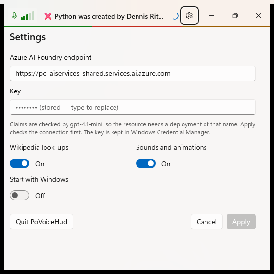
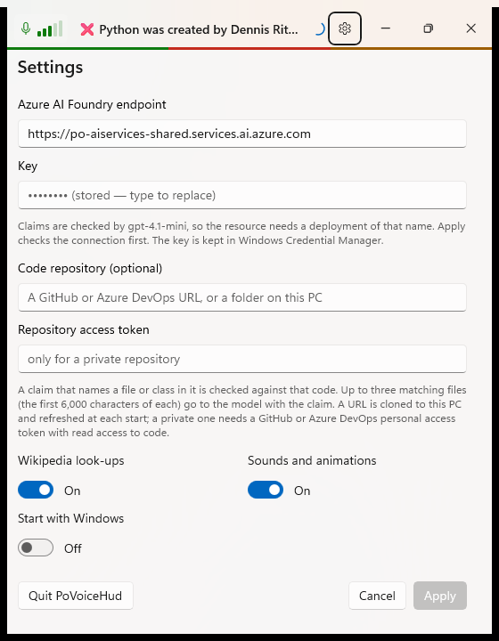
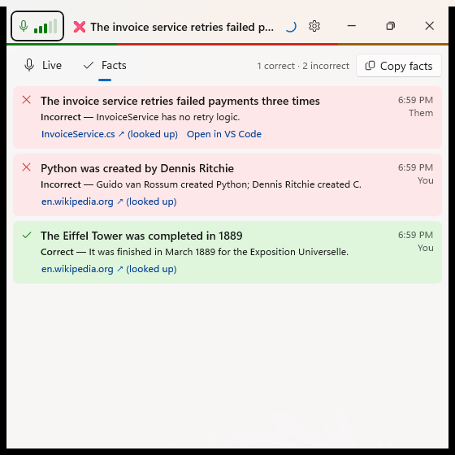

The code repository is back, and the call switch is gone
Debug build with --demo --settings, captured with PrintWindow at 560 px wide. "Before" is the Settings page after the call switch was removed; "after" adds the repository.
Before

1- Also listen to the call is no longer a switch: the call is always heard and lines say You or Them.
After

123- Code repository: a GitHub or Azure DevOps URL, or a folder. Claims that name its files or classes are checked against that code.
- An access token only for a private repository, kept in Credential Manager.
- Apply reads a new repository first and says what it found, or why it could not.
After: a fact about the code

12- The file it was judged from, on GitHub or Azure DevOps.
- Open in VS Code: the file at the line that declares the class.